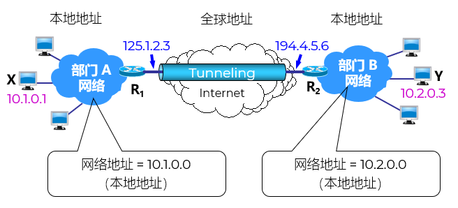

| CIDR | Range | Number | Amount | Scenario |
|---|---|---|---|---|
| 10.0.0.0/8 | 10.0.0.0 - 10.255.255.255 | 1个A类 | 16,777,216 | 大型企业 |
| 172.16.0.0/12 | 172.16.0.0 - 172.31.255.255 | 16个B类 | 1,048,576 | 中型企业 |
| 192.168.0.0/16 | 192.168.0.0 - 192.168.255.255 | 256个C类 | 65,536 | 家庭/小型办公室 |
虚拟：非物理专线，而是逻辑通道
专用：数据仅限授权用户访问
网络：可实现点对点或网络对网络通信
将原始数据包“封装”进另一个数据包中传输
类比：把信件装进带锁的快递箱

使用对称/非对称加密算法 如 AES、RSA 保护数据
防止窃听、篡改
确保通信双方身份合法 如用户名/密码、数字证书、双因素认证
使用哈希算法 如 SHA 确保数据未被篡改